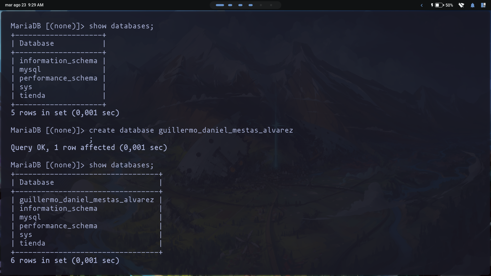
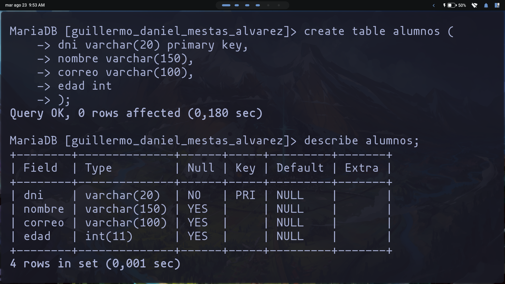

Algoritmia de Programacion
Agosto 10.2022 | Guillermo Mestas

En la captura se puede el listado de las bases de datos de mi ordernador la cual lo realizo con el comando:
show databases;despues creo la base de datos con mi nombre con el comando:
create database guillermo_daniel_mestas_alvarez;y por ultimo realizo un nuevo listado de las bases de datos y se muestra la base de datos creada.

En la imagen se muestra la creacion de la tabla alumnos utilizando el comando:
create table alumnos (
-> dni varchar(20) primary key,
-> nombre varchar(150),
-> correo varchar(100),
-> edad int
-> );despues visualizamos la estructura de la tabla alumnos con el comando:
describe alumnos;viendo los campos que definimos en la creacion de la tabla.